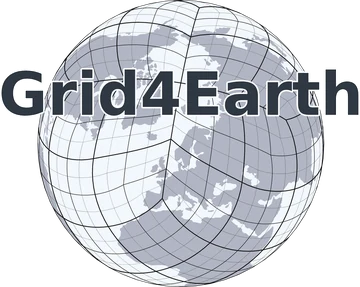

Ifremer / LOPS · PhD
Tina Odaka
Principal Investigator of GRID4EARTH and the Global Fish Tracking Service (GFTS).
Research and Development Engineer in Large Data Processing
My research focuses on oceanography and marine data science. I develop reproducible methods that combine marine animal tracking, satellite Earth observation and ocean–climate modelling to investigate fish movements, marine habitats and ocean dynamics, supporting marine conservation and sustainable development. To achieve this, I lead the GRID4EARTH project, which studies the integration of observations and models on common global grids based on ellipsoidal HEALPix, using open-source software, high-performance computing and cloud infrastructure.
Ifremer profile & publications · ORCID · GitHub
tina.odaka@ifremer.fr
Coordination & supervision
Research leadership & mentoring
As Principal Investigator of GRID4EARTH and GFTS, I coordinate collaborative research and scientific software development linking marine science, Earth observation and computational methods. I also lead the RiOMar case study within FAIR2Adapt.
During my PCDM role at Ifremer (2008–2019), I supervised nine trainees and early-career researchers, including interns, a postdoctoral researcher and a work-study student. My mentoring combines scientific computing, oceanographic applications and reproducible research practices.
Research & collaboration
Projects and responsibilities
May 2025–present

Principal Investigator (PI)
GRID4EARTH is an ESA-funded project within the Digital Twin Earth framework, connecting Copernicus Sentinel satellite observations with climate-model data from Destination Earth (DestinE). It develops open-source tools to represent these datasets on a common, equal-area grid based on ellipsoidal HEALPix, a Discrete Global Grid System (DGGS). Combined with cloud-friendly Zarr storage, this approach supports interoperable, analysis-ready data and scalable workflows for comparing observations and simulations.
As Principal Investigator, I coordinate the consortium’s scientific and technical activities across work packages, working with the work-package leads.
Principal Investigator (PI)
GFTS combines fish biologging observations with environmental data and climate projections to reconstruct movements and explore habitats, supporting marine conservation and fisheries management. Pangeo-Fish is the open-source Python package used for scalable biologging analysis and fish geolocation within this work.
Pangeo-Fish — software and documentation
RiOMar Case Study Lead — WP6, Case Study 2
A European project using FAIR data practices and the European Open Science Cloud (EOSC) to support climate adaptation. Its RiOMar case study addresses coastal water quality and ecosystem responses in the Bay of Biscay.
RiOMar case study
Ifremer representative
An ESA-funded service providing Copernicus Sentinel samples in the cloud-friendly EOPF Zarr format, with tools and notebooks to help users explore and adopt it.
I demonstrated ocean wave spectral analysis with Sentinel-2 data, adapting a SAFE-based workflow to EOPF Zarr using 2D Fourier analysis and coherence, presented in a public webinar (see Teaching).
Sharing knowledge
Teaching & tutorials
Selected courses, workshops and webinars.
ETN Symposium — Fish geolocation with Pangeo-Fish
15 October 2026 · Copenhagen
IMT Atlantique — Distributed data and computation
2022–present · taught annually
Part-time lecturer (vacataire de droit public)
Annual teaching in scientific computing and distributed data processing since 2022. The 2025 course, “Calcul intensif : distribution des données et des calculs”, used the Pangeo ecosystem.
Course listing
BiDS 2025 — Scalable Earth observation analysis
2025
Tutorial contributor
Joint Pangeo and EO4EU tutorial for scalable Earth observation analysis.
Training repository
EOPF — Ocean wave spectral analysis
28 August 2025
EGU 2025 — Harnessing the Power of Pangeo
2025
Experience & education
Scientific background
Research and Development Engineer in Large Data Processing
2019–present
Ifremer / LOPS
Scientific computing for oceanography; parallel computing on HPC and cloud infrastructure; coordination of fish biologging software development and Pangeo community activities.
Technical Manager, PCDM (Centre for Computing and Data for the Sea)
2005–2019
Ifremer (2005–2008: Ifremer-funded position at Université de Bretagne Occidentale, UBO)
Fourteen years coordinating marine HPC infrastructure, procurement and installation, scientific user support and training. Integrated virtual research environments on DATARMOR and worked on parallelisation, coupling and optimisation of ocean models including MARS, WW3, CROCO, NEMO and HYCOM.
Postdoctoral Researcher
2004–2005
UBO / CNRS UMR 6538, Domaines Océaniques
Development of satellite geomagnetism data-processing methods.
Doctorate in Natural Sciences (Doktor der Naturwissenschaften)
2001–2004
Bergische Universität Wuppertal, Germany; jointly supervised with Ochanomizu University, Japan
Doctoral research in theoretical molecular spectroscopy, including numerical calculations of molecular rovibronic states and the double Renner effect.
University research description